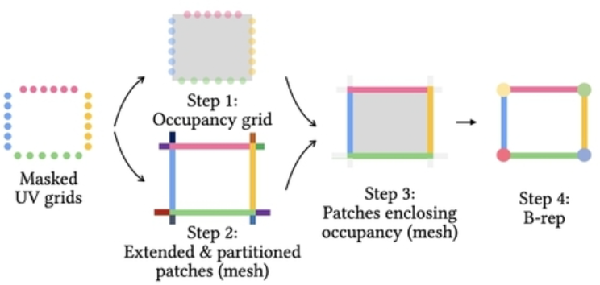
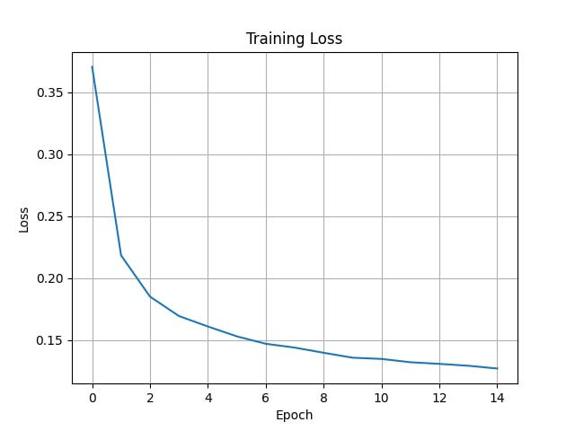
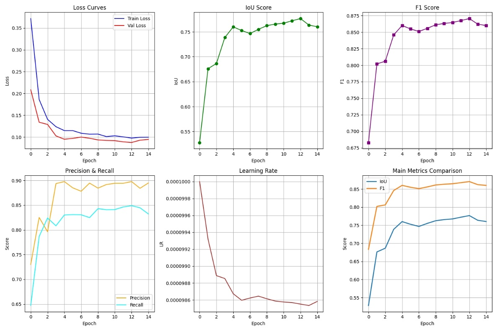
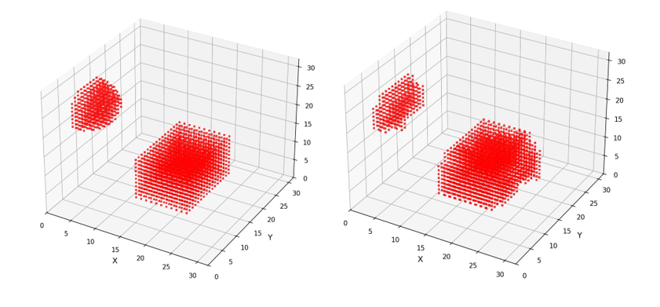
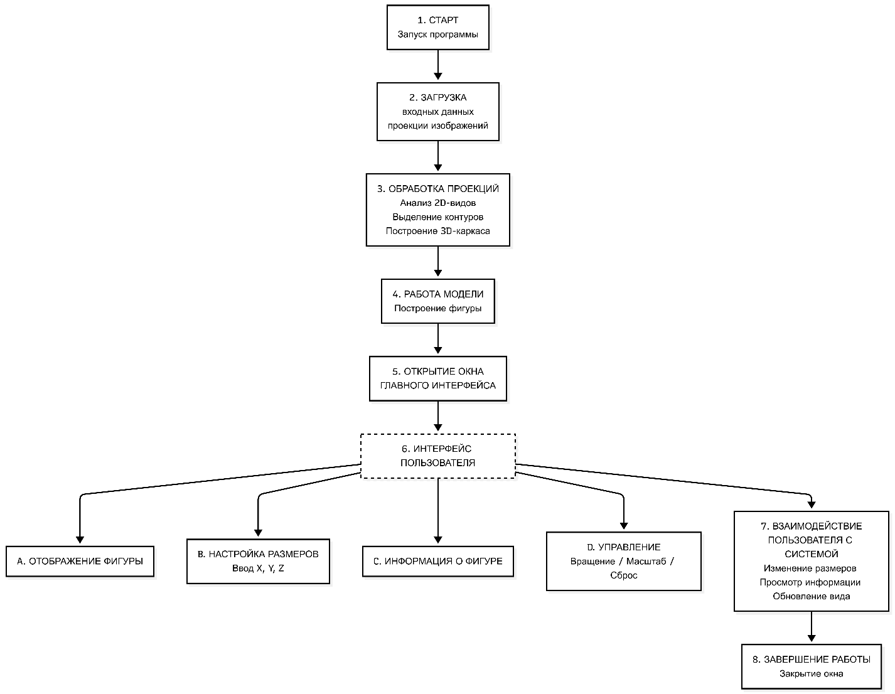
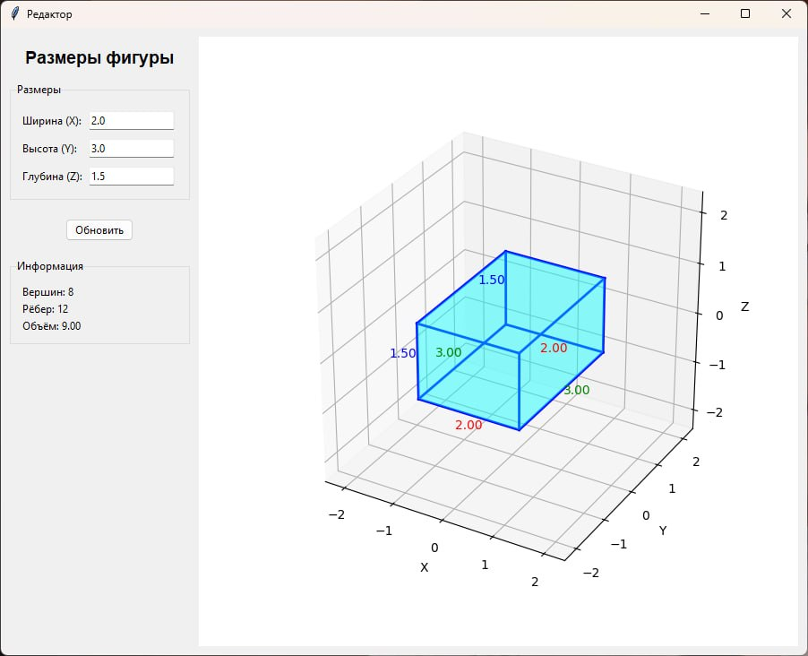

Разработка системы для реконструкции 3D-моделей по изображениям
Автореферат научно-исследовательской работы
Направление подготовки: 01.04.02 «Прикладная математика и информатика»
Программа: «Технологии программирования и разработки информационно-коммуникационных систем»
Сторожева Полина Антоновна
Краснодар, 2026
1. Актуальность темы исследования
В современной инженерной практике, системах автоматизированного проектирования и области компьютерного зрения особое значение приобретает задача автоматического восстановления трехмерной геометрии объектов по их двумерным изображениям. Решение данной задачи позволяет автоматизировать процессы обратного инжиниринга, повысить точность распознавания и анализа объектов в системах технического зрения, а также ускорить разработку и модификацию моделей в CAD-системах.
Технологии реконструкции трехмерных моделей применяются в промышленности, робототехнике, медицине, виртуальной и дополненной реальности. При этом создание трехмерной модели вручную требует значительных временных затрат и специальных навыков работы с программами трехмерного моделирования.
Использование методов компьютерного зрения и нейронных сетей позволяет автоматизировать отдельные этапы построения геометрии. Особый интерес представляют методы, способные получать информацию о пространственной структуре объекта на основе нескольких двумерных проекций.
Актуальность исследования обусловлена необходимостью разработки программного средства, которое объединяет подготовку изображений, обработку данных, нейросетевую реконструкцию и последующую визуализацию полученной трехмерной модели.
↑ К содержанию2. Цель и задачи исследования
Целью работы является разработка программной системы для реконструкции трехмерных моделей объектов на основе их двумерных изображений с применением методов компьютерного зрения и нейронных сетей.
Для достижения поставленной цели необходимо решить следующие задачи:
- Изучить существующие методы и алгоритмы реконструкции трехмерных объектов по изображениям.
- Рассмотреть современные нейросетевые архитектуры, применяемые для восстановления трехмерной геометрии.
- Исследовать способы представления трехмерных объектов, включая воксельные и гранично-представленные модели.
- Разработать алгоритмы подготовки исходных данных и формирования обучающего набора.
- Реализовать программные средства генерации изображений объектов с различных ракурсов.
- Разработать и обучить нейросетевые модели для восстановления трехмерной структуры объектов.
- Провести оценку результатов реконструкции с использованием метрик качества.
- Разработать интерфейс для просмотра и редактирования полученных трехмерных моделей.
3. Объект и предмет исследования
Объектом исследования являются процессы автоматизированной реконструкции трехмерной геометрии объектов по двумерным изображениям.
Предметом исследования выступают методы компьютерного зрения, нейросетевые архитектуры, алгоритмы подготовки данных и способы представления трехмерной геометрии, используемые для восстановления пространственной структуры объектов.
↑ К содержанию4. Анализ существующих методов реконструкции
Одним из распространенных способов представления геометрии трехмерных объектов является Boundary Representation (B-Rep). Данный подход описывает твердое тело через совокупность поверхностей, ребер и вершин, а также связи между ними. В отличие от простого представления формы, B-Rep позволяет хранить сведения о структуре объекта и взаимном расположении его геометрических элементов.
B-Rep широко применяется в системах автоматизированного проектирования, поскольку обеспечивает точное описание поверхности и топологии объекта. Однако непосредственное восстановление такого представления с использованием нейронных сетей является сложной задачей, требующей учета геометрических и топологических ограничений.
4.1. Модель BrepDiff
BrepDiff представляет собой диффузионный подход к генерации гранично-представленных CAD-моделей. В основе метода лежит использование представления геометрических поверхностей и связанных с ними элементов B-Rep.
В рамках данного подхода используются UV-представления граней, позволяющие описывать геометрию поверхностей в параметрическом пространстве. Диффузионная модель последовательно восстанавливает данные, необходимые для получения геометрической структуры объекта.



4.2. Подход CLR-Wire
Другим рассматриваемым направлением является CLR-Wire, ориентированный на генерацию каркасных представлений трехмерных объектов. В таком представлении основное внимание уделяется ребрам и соединяющим их вершинам.
Каркасное описание позволяет представить структуру объекта в виде набора пространственных кривых. Такой способ может использоваться как промежуточный этап при построении более сложной геометрии.
Рассмотренные методы демонстрируют возможности применения нейросетевых архитектур для работы с CAD-геометрией. Вместе с тем для практической реализации системы необходимо учитывать сложность обработки исходных моделей и вычислительные затраты.
↑ К содержанию5. Выбор представления трехмерных данных
Для обучения нейросетевых моделей необходимо преобразовать исходную геометрию в формат, пригодный для обработки алгоритмами машинного обучения. Одним из вариантов является воксельное представление.
Воксельная модель представляет собой трехмерную сетку, каждая ячейка которой содержит информацию о наличии или отсутствии части объекта в соответствующей области пространства. Такое представление позволяет применять трехмерные сверточные нейронные сети для восстановления формы объектов.


Преимуществом воксельного представления является простота формирования обучающих данных и возможность применения стандартных операций трехмерной свертки. Недостатком выступает увеличение объема данных при повышении разрешения сетки, а также ограниченная точность описания мелких геометрических элементов.
↑ К содержанию6. Разработка программной системы
6.1. Постановка задачи
Разрабатываемая система предназначена для восстановления трехмерной формы объекта на основе набора его двумерных проекций. Программа должна обеспечивать подготовку исходных данных, обработку изображений, передачу информации в нейросетевую модель и визуализацию полученного результата.
В качестве входных данных используются изображения объекта с различных ракурсов. Результатом работы является трехмерное представление, которое может быть рассмотрено и изменено с использованием интерфейса программы.
6.2. Используемые технологии
Основным языком программной реализации выбран Python. Для разработки и обучения нейросетевых моделей используются библиотеки PyTorch и TensorFlow. Подготовка данных и выполнение операций с трехмерными объектами осуществляется с применением специализированных инструментов обработки геометрии.
Для визуализации результатов используются средства трехмерного рендеринга. Применение перечисленных технологий позволяет объединить подготовку обучающих данных, обучение моделей и просмотр результатов в рамках одной программной системы.
6.3. Подготовка обучающего набора данных
Важным этапом разработки является формирование набора данных, содержащего трехмерные объекты и соответствующие им изображения. Для этого исходные модели обрабатываются и преобразуются в представления, используемые при обучении.
Для каждой фигуры формируются изображения с нескольких направлений. Использование различных ракурсов позволяет предоставить модели дополнительную информацию о пространственной форме объекта.

6.4. Обучение нейросетевой модели
Для восстановления трехмерной структуры применяется нейросетевая архитектура, включающая этап извлечения признаков из входных изображений и этап формирования трехмерного представления.
На этапе кодирования входные данные преобразуются в компактное внутреннее представление. Далее декодирующая часть сети использует полученные признаки для восстановления пространственной структуры объекта.
При обучении модели используются подготовленные пары данных, включающие входные изображения и соответствующие им эталонные трехмерные представления. Качество восстановления оценивается путем сравнения предсказанной структуры с исходной.
↑ К содержанию7. Результаты экспериментов
После подготовки обучающего набора данных было проведено обучение нейросетевых моделей. В процессе экспериментов анализировалась динамика изменения функции потерь, а также показатели качества восстановления трехмерных объектов.

Для оценки качества реконструкции использовалась метрика Intersection over Union (IoU), позволяющая определить степень совпадения предсказанного и эталонного воксельных представлений. Дополнительно анализировались показатели точности и полноты восстановления.



По результатам экспериментов установлено, что использование нейросетевого подхода позволяет восстанавливать общую форму объектов по их изображениям. При этом качество результата зависит от сложности геометрии, разрешения трехмерной сетки и характеристик обучающего набора данных.
При анализе показателей также учитывается возможное различие между точностью и полнотой реконструкции. Модель может формировать более разреженное представление по сравнению с эталонной фигурой, пропуская отдельные элементы исходной структуры.


8. Разработка интерфейса системы
Для обеспечения взаимодействия пользователя с разработанным программным средством предусмотрен графический интерфейс. Работа программы начинается с загрузки и обработки исходных изображений. Система анализирует двумерные проекции, выделяет характерные контуры и формирует предварительное представление объекта.
После обработки входных данных запускается вычислительная модель, которая выполняет восстановление трехмерной структуры. Полученный результат передается в модуль визуализации.

В интерфейсе пользователь может рассмотреть созданную фигуру, настроить ее размеры и получить общую информацию об объекте. Таким образом, система объединяет вычислительную часть и средства визуального взаимодействия с результатами реконструкции.

9. Практическая значимость работы
Практическая значимость исследования заключается в разработке программного средства, позволяющего автоматизировать отдельные этапы восстановления трехмерных объектов по изображениям. Реализованные алгоритмы могут применяться для подготовки обучающих данных, проведения экспериментов с нейросетевыми архитектурами и анализа результатов реконструкции.
Разработанная система может служить основой для дальнейшего исследования методов восстановления геометрии и интеграции нейросетевых моделей в процессы автоматизированного проектирования.
↑ К содержанию10. Заключение
В ходе выполнения работы были изучены современные методы реконструкции трехмерных моделей по изображениям, рассмотрены особенности различных способов представления геометрии и проанализированы нейросетевые подходы, применяемые для решения данной задачи.
Была разработана программная система на языке Python, предназначенная для подготовки обучающих данных, генерации изображений объектов с различных ракурсов, обучения нейросетевых моделей и визуализации результатов. В реализации использованы библиотеки PyTorch и TensorFlow.
Проведено обучение моделей и выполнен анализ полученных результатов с использованием метрик качества. Разработан интерфейс, позволяющий просматривать реконструированные объекты и взаимодействовать с полученными трехмерными представлениями.
Полученные результаты подтверждают возможность применения нейросетевых методов для восстановления трехмерной формы объектов по двумерным изображениям. Дальнейшее развитие системы предполагает повышение детализации реконструкции, совершенствование обработки сложных геометрических объектов и исследование способов получения более точных CAD-моделей.
На момент подготовки данного автореферата магистерская работа находится в стадии выполнения. Завершение исследования и подготовка полного текста работы запланированы на 2027 год. Полный текст работы и дополнительные материалы по теме могут быть получены у автора или научного руководителя после завершения исследования.